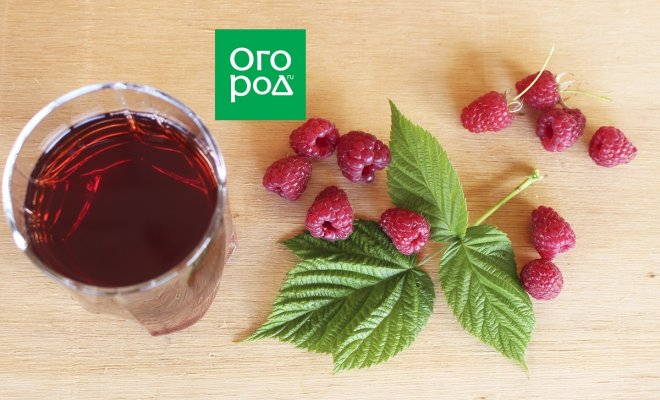

Екатерина Горбаченок / ogorod.ru
Домашнее малиновое вино – яркий и вкусный напиток, который улучшает аппетит, укрепляет иммунитет, помогает справиться с бессонницей и анемией. Приготовив вино своими руками, вы можете быть уверены, что там нет консервантов и других вредных добавок.
Самый ароматный напиток получается из лесной малины. Однако можно использовать и садовую: как красную, так и желтую. Чем больше желтой малины, тем светлее будет вино.
Вам понадобятся: ягоды малины – 1 кг, вода – 1 л, сахар – 500 г.
Шаг 1. Подготовьте ягоды
Соберите спелые ягоды малины в чистую емкость. Не используйте для приготовления вина недозревшие или подпорченные ягоды – это отрицательно повлияет на вкус будущего напитка. Ягоды не мойте, чтобы сохранить на их поверхности дикие дрожжи, необходимые для брожения.
Малина – ягода с отличной бродильной способностью. Немытую малину можно использовать в качестве закваски для приготовления другого ягодного вина.
Шаг 2. Измельчите ягоды
Перемните ягоды рукой, деревянной ложкой или толкачиком. Это можно сделать прямо в той емкости, где будет бродить сусло.
Шаг 3. Добавьте сахарный сироп
Разведите в 700 мл теплой воды 300 г сахара, остудите и влейте в емкость с размятой малиной. Емкость должна быть наполнена не более чем на 70%, поскольку в процессе брожения будут выделяться пена и углекислый газ.
Шаг 4. Перемешивайте каждый день
Прикройте банку с вином полотенцем и поставьте на 5 дней в темное и теплое место, где температура составляет 19-25°C. Несколько раз в день перемешивайте сусло деревянной лопаткой, ложкой или рукой. Признаки брожения (пена, кислый запах) появляются обычно на второй день. Это означает, что все идет хорошо.
Шаг 5. Процедите сусло
Через 5-6 дней процедите сусло. Для этого можно использовать тканевый мешок или мелкое сито. Ягодный жмых отожмите и выбросьте: он больше не нужен. Разведите 100 г сахара в 300 мл теплой воды, остудите и влейте процеженный сок.
Шаг 6. Установите гидрозатвор
Будущее вино перелейте в чистую емкость и установите гидрозатвор. Это может быть крышка с гидрозатвором, куда сверху заливается вода, или резиновая перчатка с проколотым пальцем. Не забывайте, что емкость должна быть заполнена не более чем на 70%.
Спустя 5 дней после установки гидрозатвора слейте небольшое количество сусла в отдельную посуду и добавьте еще 100 г сахара. Тщательно перемешайте и влейте получившийся сироп в будущее вино. Снова закройте емкость гидрозатвором и поставьте в темное и теплое место до окончания брожения. Этот процесс длится 30-50 дней, в зависимости от активности дрожжей. Если вино активно работает и количество осадка в банке достаточно большое, приблизительно через месяц можно снять вино с осадка, перелив в другую чистую емкость с помощью трубочки. Это поможет предотвратить появление в напитке неприятного горьковатого привкуса, который дают погибшие дрожжи.
После окончания брожения, когда перчатка сдувается, а в гидрозатворе больше не появляются пузырьки воздуха, аккуратно перелейте вино через трубочку в другую емкость. Делать это нужно так, чтобы не задеть осадок. Емкость можно наполнить доверху, плотно закрыть и поставить в прохладное место для дозревания. Через несколько недель нужно снова снять вино с осадка, используя трубочку. А после плотно закрыть и поставить в прохладное место. В течение ближайших месяцев, по мере образования осадка, процедуру фильтрации вина желательно повторить еще несколько раз. После этого можно разливать вино по бутылкам и плотно закупоривать.
Готовое вино желательно хранить при температуре 10-15°С. При этом срок годности напитка составляет около пяти лет.